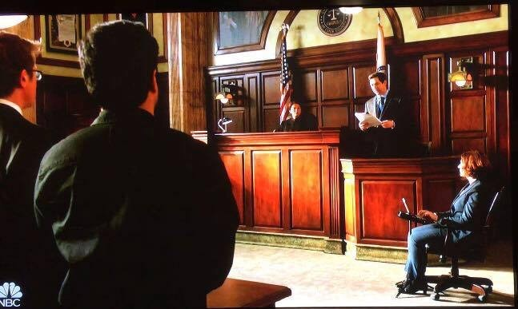
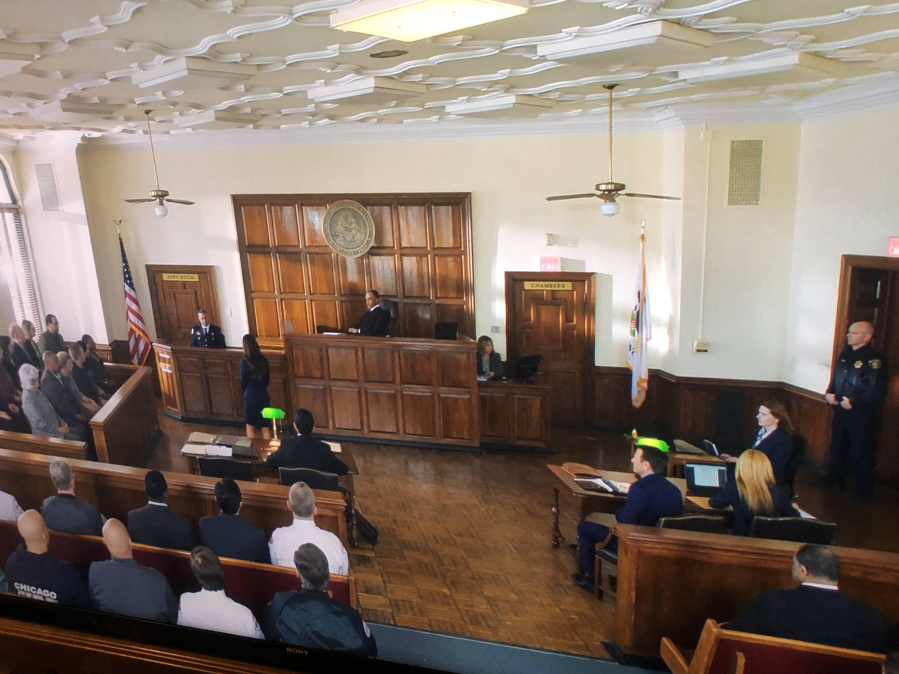
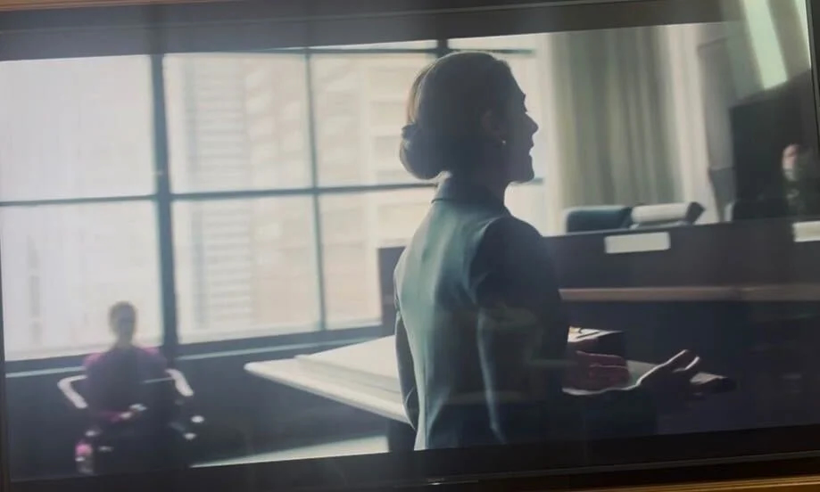

Nina Dudziak has appeared in the role of "stenographer" in the following TV shows:
- Chicago Justice (NBC)
- Chicago Med (NBC)
- Chicago Fire (NBC)
- Suits (USA Network)
- South Side (Comedy Central)
- Redline (CBS)
- Proven Innocent (Fox)
- 61st Street (AMC)
- The Up and Comer (Film)
- Emperor of Ocean Park (Starz)
Nina has also appeared in various roles in the following TV shows, movies, and commercials:
- Chicago P.D.
- The Chi
- Uber commercial
- Captive State
- How It Ends
- Canal Street
- Widows
- Electric Dreams
- Easy
- An Acceptable Loss
- Soundtrack
- Next
- Utopia
- Shameless
- The Pages
- Empire
- Mr. Throwback

Chicago Justice: Season 1, Episode 12
Suits: Season 7, Episode 16
Redline: Season 1, Episode 7
South Side: Season 1, Episode 5
Chicago Med: Season 3, Episode 1

Chicago Fire: Season 6, Episode 23
Emperor of Ocean Park: Episode 1

Emperor of Ocean Park: Episode 9